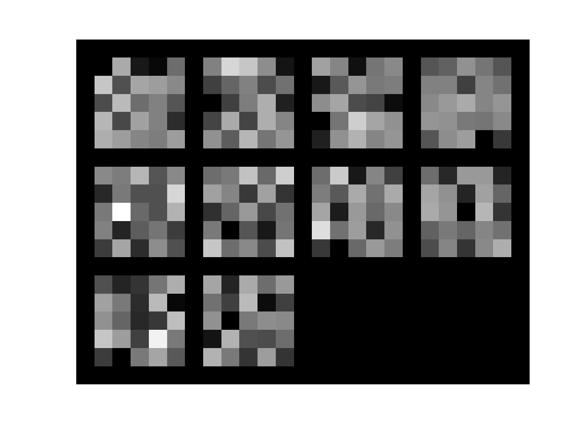斯坦福ML（Matlab
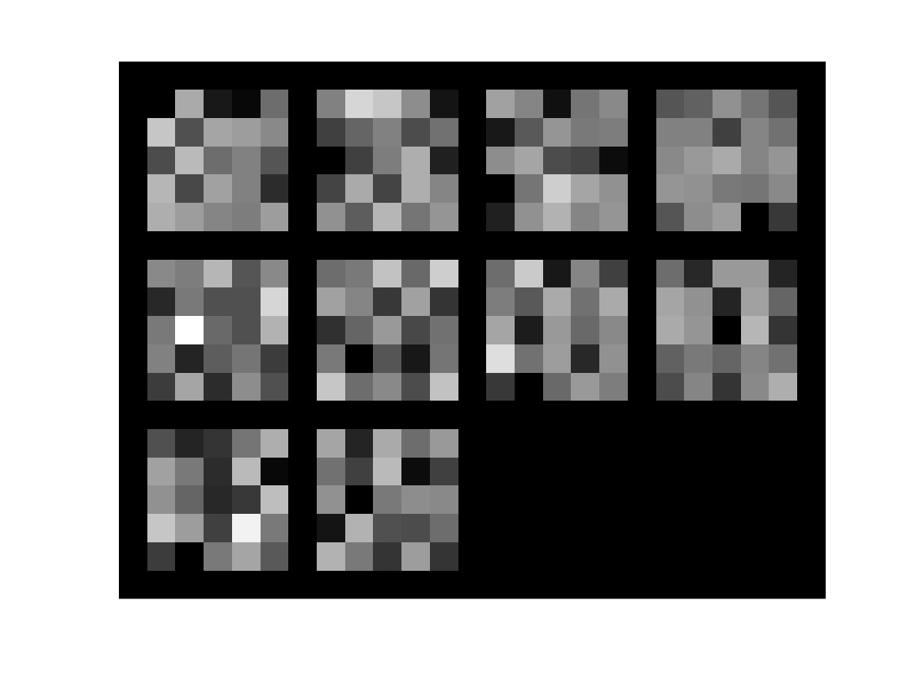斯坦福ML（Matlab ）公开课，实现上次遗留的反向传播算法，并应用于手写数字识别，这次的看点是隐藏层的可视化，以及随机初始化参数的一些讲究。
）公开课，实现上次遗留的反向传播算法，并应用于手写数字识别，这次的看点是隐藏层的可视化，以及随机初始化参数的一些讲究。
简介
神经网络
上次实现了前向传播，但模型参数是别人给的。这次实现学习参数反向传播算法。
前向传播和损失函数
定义损失函数为：
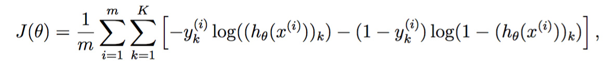
其中 是输出层第k个神经元的激活函数，而y的编码为one-hot形式：
是输出层第k个神经元的激活函数，而y的编码为one-hot形式：

列向量第i个元素为1时表示编码为数字i。
正则化损失函数
定义正则化损失函数为

相较于非正则化的损失函数，其多出了两个正则化项，分别对应于输入层->中间层、中间层->输出层的权值参数。从求和符号可以看出这两个层的大小。
实现如下：
- function [J grad] = nnCostFunction(nn_params, ...
- input_layer_size, ...
- hidden_layer_size, ...
- num_labels, ...
- X, y, lambda)
- %NNCOSTFUNCTION Implements the neural network cost function for a two layer
- %neural network which performs classification
- % [J grad] = NNCOSTFUNCTON(nn_params, hidden_layer_size, num_labels, ...
- % X, y, lambda) computes the cost and gradient of the neural network. The
- % parameters for the neural network are "unrolled" into the vector
- % nn_params and need to be converted back into the weight matrices.
- %
- % The returned parameter grad should be a "unrolled" vector of the
- % partial derivatives of the neural network.
- %
- % Reshape nn_params back into the parameters Theta1 and Theta2, the weight matrices
- % for our 2 layer neural network
- Theta1 = reshape(nn_params(1:hidden_layer_size * (input_layer_size + 1)), ...
- hidden_layer_size, (input_layer_size + 1));
- Theta2 = reshape(nn_params((1 + (hidden_layer_size * (input_layer_size + 1))):end), ...
- num_labels, (hidden_layer_size + 1));
- % Setup some useful variables
- m = size(X, 1);
- % You need to return the following variables correctly
- J = 0;
- Theta1_grad = zeros(size(Theta1));
- Theta2_grad = zeros(size(Theta2));
- % ====================== YOUR CODE HERE ======================
- % Instructions: You should complete the code by working through the
- % following parts.
- %
- % Part 1: Feedforward the neural network and return the cost in the
- % variable J. After implementing Part 1, you can verify that your
- % cost function computation is correct by verifying the cost
- % computed in ex4.m
- %
- a_1 = [ones(m, 1) X];%add +1 to X;
- z_2 = sigmoid(a_1 * Theta1');
- a_2 = [ones(m, 1) z_2];
- a_3 = sigmoid(a_2 * Theta2');
- Y = zeros(m,num_labels);
- for i = 1 : m
- Y(i,y(i)) = 1;
- end
- %
- J = 1 / m * trace(- Y * log(a_3)' - (1 - Y) * log(1 - a_3)');
- t1 = Theta1(:,2:end);
- t2 = Theta2(:,2:end);
- regularize = lambda / 2 / m * (trace(t1 * t1') + trace(t2 * t2') );
- J = J + regularize;
nn_params其实是个列向量：

包含了两个权值矩阵的全部元素（也许这么做是为了效率考虑），所以需要reshape还原成两个矩阵。
然后完成前向传播：
- a_1 = [ones(m, 1) X];%add +1 to X;
- z_2 = sigmoid(a_1 * Theta1');
- a_2 = [ones(m, 1) z_2];
- a_3 = sigmoid(a_2 * Theta2');
完成label的one-hot编码：
- Y = zeros(m,num_labels);
- for i = 1 : m
- Y(i,y(i)) = 1;
- end
然后计算非正规化的部分：
- J = 1 / m * trace(- Y * log(a_3)' - (1 - Y) * log(1 - a_3)');
这里的trace表示计算一个方阵的对角线元素之和。由于Y和a都是m*K的矩阵，所以括号里的结果是一个m*m的方阵，然而根据
求和方括号一共有m*K项。但是对y这个K*1的列向量来讲，只有一个元素是1，其他都是0，所以最终求和只有m项。究竟是方阵中哪m个元素呢？有效的只有i相等的元素，也就是对角线元素。其他元素都是无效的，是为了代码简洁而浪费的牺牲品。同样的牺牲品还有下面的
- trace(t1 * t1')
明明只想计算t1元素的平方和的，为了优雅非要使用矩阵运算。
不得不说学术界永远视简洁优雅高于效率内存，好看至上。
sigmoid梯度
对激活函数 求导：
求导：

实现如下：
- function g = sigmoidGradient(z)
- %SIGMOIDGRADIENT returns the gradient of the sigmoid function
- %evaluated at z
- % g = SIGMOIDGRADIENT(z) computes the gradient of the sigmoid function
- % evaluated at z. This should work regardless if z is a matrix or a
- % vector. In particular, if z is a vector or matrix, you should return
- % the gradient for each element.
- g = zeros(size(z));
- % ====================== YOUR CODE HERE ======================
- % Instructions: Compute the gradient of the sigmoid function evaluated at
- % each value of z (z can be a matrix, vector or scalar).
- g = sigmoid(z) .* (1 - sigmoid(z));
- % =============================================================
- end
随机初始化参数
要将参数进行随机初始化，而不是全部置为0 。如果所有参数都用相同的值作为初始值，那么所有隐藏层单元最终会得到与输入值有关的、相同的函数（也就是说，对于所有 i， 都会取相同的值，那么对于任何输入 x都会有
都会取相同的值，那么对于任何输入 x都会有 ）。随机初始化的目的是使对称失效（symmetry breaking）。
）。随机初始化的目的是使对称失效（symmetry breaking）。
随机初始化可不是单纯地取随机数那么简单，里面大有学问。好的随机初始化算法可以加快训练速度，提高训练效果。其中一种经典的方法是，取一个常数 ，随机生成
，随机生成 之间的均匀分布。
之间的均匀分布。
而常数 的选取也有学问，经验法则是取
的选取也有学问，经验法则是取

上面的in和out分别代表某一层的入度和出度，可以看出，讲究的话每一层的 都可能是不同的。
都可能是不同的。
反向传播
反向传播算法从输出层反向朝着输入层传播的是什么？是误差（包括斯坦福wiki在内的一些资料也译作残差）。
1、定义输入层的值 为特征，利用前向传播计算每一层的输入和输出
为特征，利用前向传播计算每一层的输入和输出 。注意输入层和隐藏层都必须设置一个+1偏置神经元。
。注意输入层和隐藏层都必须设置一个+1偏置神经元。
2、对输出层的每个神经元k，其误差是

其推导方式如下：
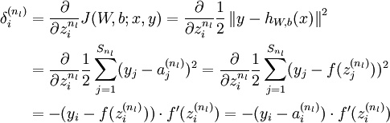
这里多了个f'，是因为额外进行了一次“sigmoid激活”，而我们直接输出了z。
3、隐藏层反向传播公式
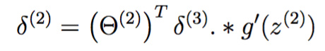
这个式子的推导如下：
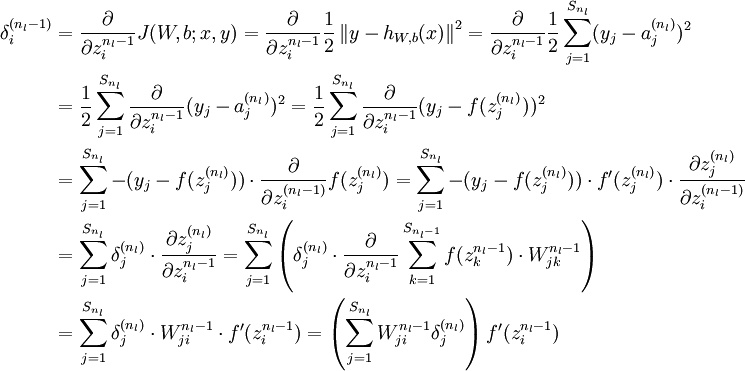
将上式中的 与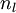的关系替换为l-1与l的关系，就可以得到：
与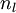的关系替换为l-1与l的关系，就可以得到：

以上逐次从后向前求导的过程即为“反向传播”的本意所在。
4、上式对参数求导，得到偏导数：

我们把偏置b也放进了W矩阵，所以上式等同于：

考虑到一共有m个训练实例，上式是其总体残差，平均残差为其1/m：

实现如下
- % Part 2: Implement the backpropagation algorithm to compute the gradients
- % Theta1_grad and Theta2_grad. You should return the partial derivatives of
- % the cost function with respect to Theta1 and Theta2 in Theta1_grad and
- % Theta2_grad, respectively. After implementing Part 2, you can check
- % that your implementation is correct by running checkNNGradients
- %
- % Note: The vector y passed into the function is a vector of labels
- % containing values from 1..K. You need to map this vector into a
- % binary vector of 1's and 0's to be used with the neural network
- % cost function.
- %
- % Hint: We recommend implementing backpropagation using a for-loop
- % over the training examples if you are implementing it for the
- % first time.
- %
- delta_3 = a_3 - Y;
- %delta_2 = delta_3 * Theta2;
- %delta_2 = delta_2(:,2:end) .* sigmoidGradient(z_2);
- delta_2 = delta_3 * Theta2 .* a_2 .* (1 - a_2);
- delta_2 = delta_2(:,2:end);
- Theta1_grad = delta_2' * a_1 / m;
- Theta2_grad = delta_3' * a_2 / m;
推导很复杂，代码倒是很简单，不过寥寥数行。
校验梯度
怎么知道代码到底有没有写错呢？把参数reshape到一个长长的向量中，每次只轻微改变其中一个元素，应该只有该元素对应的偏导数会轻微变化。
假设我们实现的梯度函数为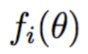，理想情况它应该输出 。定义
。定义
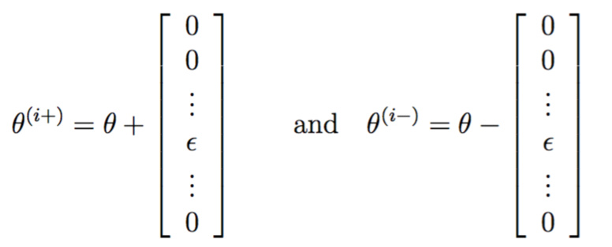
两者与theta相比都只有第i个元素有少量变化，如果真的没错的话，那么可以期待
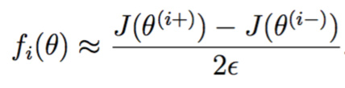
实现如下，等式右边：
- function numgrad = computeNumericalGradient(J, theta)
- %COMPUTENUMERICALGRADIENT Computes the gradient using "finite differences"
- %and gives us a numerical estimate of the gradient.
- % numgrad = COMPUTENUMERICALGRADIENT(J, theta) computes the numerical
- % gradient of the function J around theta. Calling y = J(theta) should
- % return the function value at theta.
- % Notes: The following code implements numerical gradient checking, and
- % returns the numerical gradient.It sets numgrad(i) to (a numerical
- % approximation of) the partial derivative of J with respect to the
- % i-th input argument, evaluated at theta. (i.e., numgrad(i) should
- % be the (approximately) the partial derivative of J with respect
- % to theta(i).)
- %
- numgrad = zeros(size(theta));
- perturb = zeros(size(theta));
- e = 1e-4;
- for p = 1:numel(theta)
- % Set perturbation vector
- perturb(p) = e;
- loss1 = J(theta - perturb);
- loss2 = J(theta + perturb);
- % Compute Numerical Gradient
- numgrad(p) = (loss2 - loss1) / (2*e);
- perturb(p) = 0;
- end
- end
正则化神经网络的梯度
在原梯度上加上正则化项的梯度即可，对于j=0代表bias，不做改动，否则：

这部分代码对应于：
- % Part 3: Implement regularization with the cost function and gradients.
- %
- % Hint: You can implement this around the code for
- % backpropagation. That is, you can compute the gradients for
- % the regularization separately and then add them to Theta1_grad
- % and Theta2_grad from Part 2.
- %
- t1 = [zeros(size(t1,1),1) t1] * lambda / m;
- t2 = [zeros(size(t2,1),1) t2] * lambda / m;
- Theta1_grad = Theta1_grad + t1;
- Theta2_grad = Theta2_grad + t2;
使用fmincg学习参数
没什么可说的，fmincg在上次练习中也用过。
- %% =================== Part 8: Training NN ===================
- % You have now implemented all the code necessary to train a neural
- % network. To train your neural network, we will now use "fmincg", which
- % is a function which works similarly to "fminunc". Recall that these
- % advanced optimizers are able to train our cost functions efficiently as
- % long as we provide them with the gradient computations.
- %
- fprintf('\nTraining Neural Network... \n')
- % After you have completed the assignment, change the MaxIter to a larger
- % value to see how more training helps.
- options = optimset('MaxIter', 50);
- % You should also try different values of lambda
- lambda = 1;
- % Create "short hand" for the cost function to be minimized
- costFunction = @(p) nnCostFunction(p, ...
- input_layer_size, ...
- hidden_layer_size, ...
- num_labels, X, y, lambda);
- % Now, costFunction is a function that takes in only one argument (the
- % neural network parameters)
- [nn_params, cost] = fmincg(costFunction, initial_nn_params, options);
- % Obtain Theta1 and Theta2 back from nn_params
- Theta1 = reshape(nn_params(1:hidden_layer_size * (input_layer_size + 1)), ...
- hidden_layer_size, (input_layer_size + 1));
- Theta2 = reshape(nn_params((1 + (hidden_layer_size * (input_layer_size + 1))):end), ...
- num_labels, (hidden_layer_size + 1));
- fprintf('Program paused. Press enter to continue.\n');
- pause;
可视化隐藏层
这是我最喜欢最期待的一部分，从来没见过这种玩法。
某个隐藏层神经元究竟在捕捉什么信息？这个问题等效于，什么样的输入x会使它激活（输出近似1，越大越好）。通过找到这样的x，然后将其可视化出来即可。由a=g(z)，z=theta*x知，theta*x也要越大越好。事实上这个超平面是无限的，必须得有个约束，比如 。据说加了约束后，取x=theta总能得到最大值（具体为什么还不知道）。
。据说加了约束后，取x=theta总能得到最大值（具体为什么还不知道）。
回忆下隐藏层的theta1每一行其实是一个401维的列向量，去掉bias项后为400维，代表一个20*20的图片，将这个图片显示出来即可。隐藏层一共25个节点，所以一共25张图片。
实现如下：
- function [h, display_array] = displayData(X, example_width)
- %DISPLAYDATA Display 2D data in a nice grid
- % [h, display_array] = DISPLAYDATA(X, example_width) displays 2D data
- % stored in X in a nice grid. It returns the figure handle h and the
- % displayed array if requested.
- % Set example_width automatically if not passed in
- if ~exist('example_width', 'var') || isempty(example_width)
- example_width = round(sqrt(size(X, 2)));
- end
- % Gray Image
- colormap(gray);
- % Compute rows, cols
- [m n] = size(X);
- example_height = (n / example_width);
- % Compute number of items to display
- display_rows = floor(sqrt(m));
- display_cols = ceil(m / display_rows);
- % Between images padding
- pad = 1;
- % Setup blank display
- display_array = - ones(pad + display_rows * (example_height + pad), ...
- pad + display_cols * (example_width + pad));
- % Copy each example into a patch on the display array
- curr_ex = 1;
- for j = 1:display_rows
- for i = 1:display_cols
- if curr_ex > m,
- break;
- end
- % Copy the patch
- % Get the max value of the patch
- max_val = max(abs(X(curr_ex, :)));
- display_array(pad + (j - 1) * (example_height + pad) + (1:example_height), ...
- pad + (i - 1) * (example_width + pad) + (1:example_width)) = ...
- reshape(X(curr_ex, :), example_height, example_width) / max_val;
- curr_ex = curr_ex + 1;
- end
- if curr_ex > m,
- break;
- end
- end
- % Display Image
- h = imagesc(display_array, [-1 1]);
- % Do not show axis
- axis image off
- drawnow;
- end
其实代码跟上次可视化手写数字图片的并没有多大不同，只不过传入的参数X变成了theta。
调用代码如下：
- %% ================= Part 9: Visualize Weights =================
- % You can now "visualize" what the neural network is learning by
- % displaying the hidden units to see what features they are capturing in
- % the data.
- fprintf('\nVisualizing Neural Network... \n')
- displayData(Theta1(:, 2:end));
- fprintf('\nProgram paused. Press enter to continue.\n');
- pause;
输出：
的确多多少少可以看出每个节点在关注白色笔画的某种模式，而不关心图片边缘的像素。
利用同样的思路可以把输出层的权值可视化出来：
- figure;
- displayData(Theta2(:, 2:end));
得到
这10张图片对应着从1到0这10个数字，属于更抽象的表示，所以可视化其实意义不大，什么也看不出来。
Reference
http://www.hankcs.com/ml/back-propagation-neural-network.html
http://ufldl.stanford.edu/wiki/index.php/%E5%8F%8D%E5%90%91%E4%BC%A0%E5%AF%BC%E7%AE%97%E6%B3%95